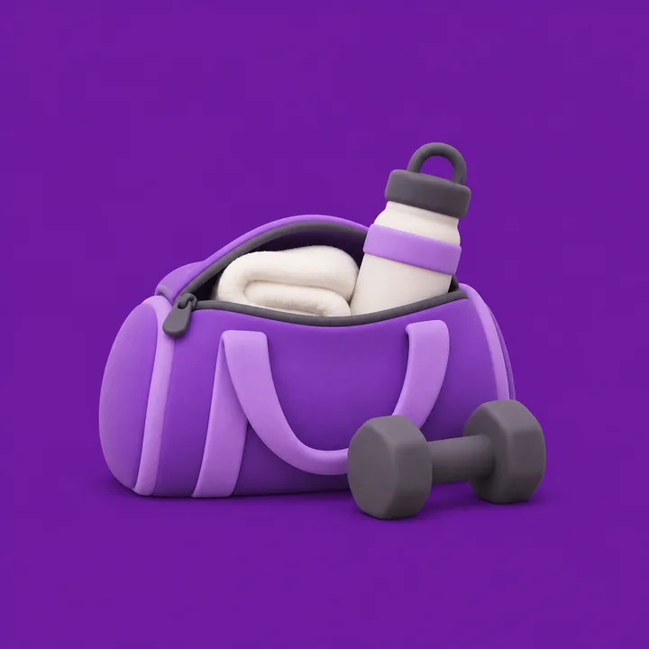
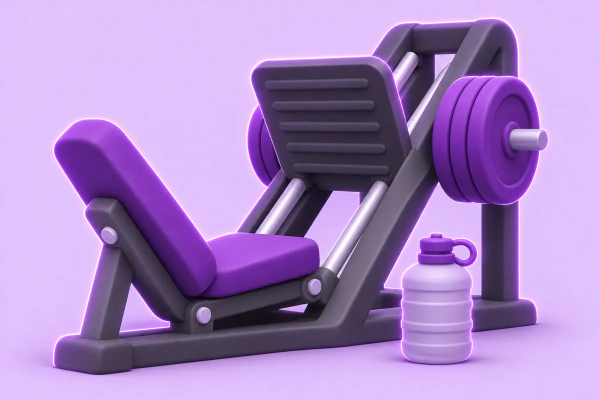
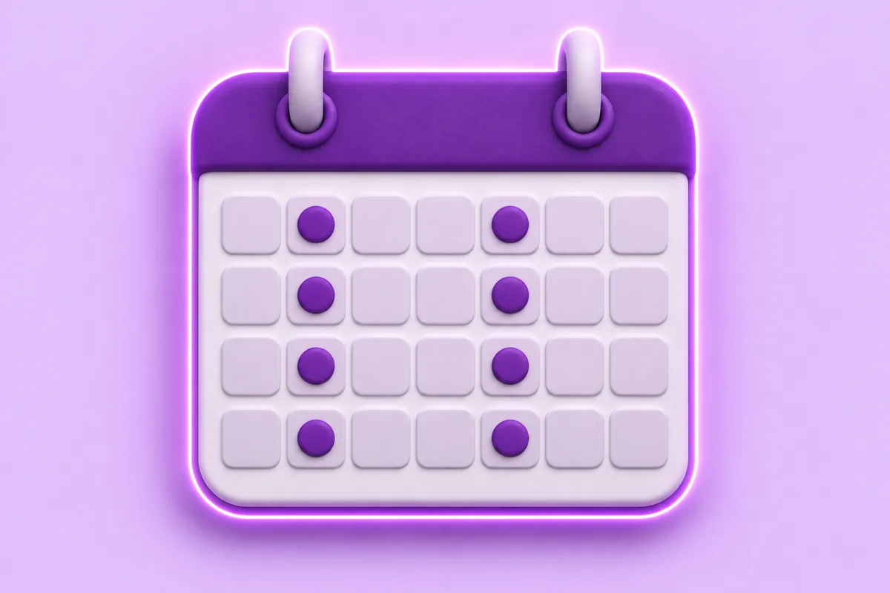
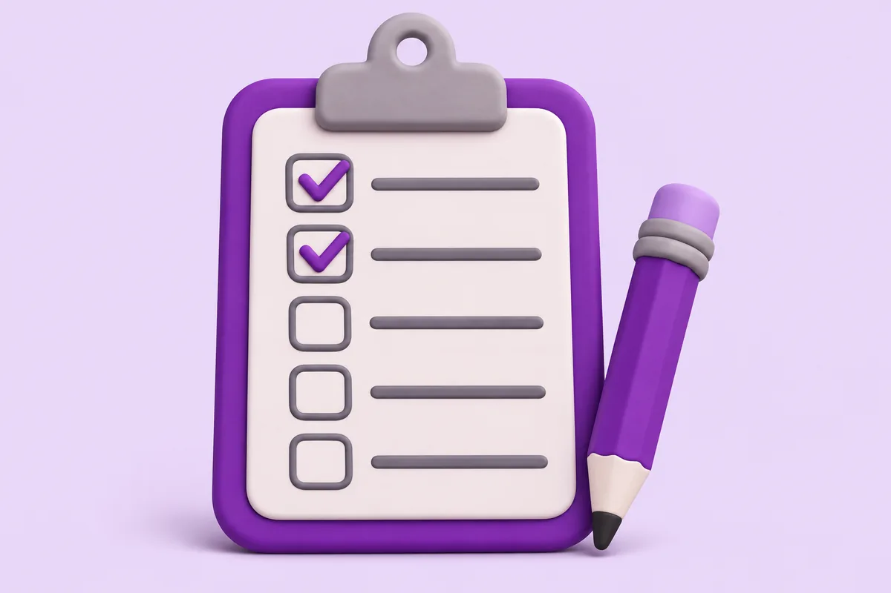

Si este enero empiezas en el gimnasio, lo más probable es que te compliques. Las tres cosas que sí importan y tus primeras cuatro semanas montadas, tengas cuarenta años o sesenta.
Al apuntarte recibirás también la newsletter semanal de Fuerza Basada en Evidencia. Puedes darte de baja cuando quieras. Privacidad.
Entonces, ¿qué lo decide?
Las tres cosas que sí
Casi ninguno de los detalles con los que nos volvemos locos cambió el resultado. Estas tres reglas, sí.
1IrSi entrenar lo mejora casi todo y casi ningún detalle cambia el resultado, el salto grande está en pasar de cero a algo. Con dos días por semana: es el mínimo que pide la Organización Mundial de la Salud.
2Todo el cuerpoCada sesión toca piernas, empuje y tirón. Nada de un día para el pecho y otro para el bíceps: con dos días, cada músculo tiene que trabajar los dos.
3Que cueste un poco más cada semanaUna repetición más, o un poco más de peso. Las primeras semanas la fuerza sube casi sola, porque tu sistema nervioso está aprendiendo el gesto.
Lo que dice la última gran guía
La guía de 2026 del Colegio Americano de Medicina del Deporte
Cada cifra, con su fuente.
137
revisiones de estudios
En 2026, el Colegio Americano de Medicina del Deporte actualizó su posición sobre entrenamiento de fuerza.
ACSM · 2026
+30.000
participantes
Adultos sanos, en programas de 6 a 52 semanas.
ACSM · 2026
17 años
desde la guía anterior
La primera actualización desde 2009. Casi ningún detalle cambió el resultado de forma consistente.
ACSM · 2026

El objetivo de enero es llegar a febrero.
La sesión no cambia. Lo que cambia es cuánto haces y cuánto aprietas.
Series por ejercicio en cada semana. En la cuarta, tres en los dos primeros ejercicios y dos en el resto. «Te sobran» son las repeticiones que podrías haber hecho de más al acabar la serie.
Dentro de la guía
Diez páginas y tu hoja de ocho sesiones
Lo que no importa, lo que sí, la sesión y las cuatro semanas montadas.
01Lo que no importa al empezarLo que dice la última gran guía de fuerza.pág. 2
02Las tres cosas que síTres reglas, cada una con su porqué.pág. 3
03La sesiónCinco ejercicios, cada uno con su alternativa.pág. 4
04Las cuatro semanasCuánto haces y cuánto aprietas cada semana.pág. 5
05Tu hoja, sesión a sesiónOcho sesiones. En cada casilla, el peso y las repeticiones.pág. 6
06Lo que te va a pasarAgujetas, y cómo distinguir una molestia de un dolor.pág. 7
07La lista de cuándo consultarLa parte de médico: antes de empezar y durante la sesión.pág. 8
La sesión
La sesión: cinco ejercicios
La misma las cuatro semanas. Dos días que no vayan seguidos, y cada ejercicio con su alternativa.

Ejercicio
Prensa de piernas
Peso muerto rumano con mancuernas
Press de pecho en máquina
Jalón al pecho
Core o brazo: plancha abdominal
O, en su lugar
Sentadilla a un banco
Puente de glúteo
Flexiones, con más o menos inclinación según tu nivel
Remo en máquina
Curl de bíceps
2 días que no vayan seguidos12 repeticiones con poco peso, el primer día4-5 repeticiones de sobra: ese es tu peso30 min la primera semana45 min la cuarta
¿Por qué en máquina? El primer día hay menos que aprender. No porque sea mejor, que ya has visto que no cambia el resultado. Y pide a alguien de sala que te ajuste las máquinas: son cinco minutos.
Semana a semana
Las cuatro semanas
La sesión no cambia. Lo que cambia es cuánto haces y cuánto aprietas.

Semana 1
Una serie de cada ejercicio, de diez a doce repeticiones.
Aprender el gesto y salir con ganas de volver. Media hora y a casa.
Te sobran 4-5
Semana 2
Dos series de cada ejercicio.
Entre una serie y otra, descansa lo que necesites para repetirla bien: uno o dos minutos.
Te sobran 3
Semana 3
Dos series, con un poco más de peso.
Tu primera subida de carga.
Te sobran 2
Semana 4
Tres series en los dos primeros ejercicios y dos en el resto.
Apuntas tus marcas: el peso y las repeticiones de cada ejercicio. Tres cuartos de hora.
Te sobran 2
Que la primera semana sea de una sola serie es criterio de entrenador, no una conclusión del artículo. Si esa primera sesión es salvaje, te pasas cuatro días sin poder sentarte, y la segunda sesión no llega nunca.
Cómo se usa
Tres pasos para tu primera semana

1Elige tus dos días, que no vayan seguidos, y ponlos en el calendario como una cita.
2Semana 1: una serie de cada ejercicio. Media hora y a casa.
3Apunta peso y repeticiones en cada casilla. La semana siguiente, que cueste un poco más.
Para quién es
Para quién es, y lo que no es
Es para ti si…
Empiezas en el gimnasio este enero, o vuelves después de mucho tiempo.
Tienes cuarenta años o sesenta: sirve igual.
Quieres saber qué hacer el primer día, sin elegir entre veinte rutinas.
Lo que no es
Un programa para quien ya lleva años entrenando.
Un sustituto de tu médico: la guía te dice cuándo consultar.
Un aviso de médico. Habla antes con tu médico si tienes una enfermedad del corazón, diabetes o una enfermedad del riñón y llevas tiempo sin hacer ejercicio, o si notas síntomas con el esfuerzo: dolor u opresión en el pecho, falta de aire que no cuadra con lo que estás haciendo, mareos o palpitaciones. La lista completa está en la página 8.
“
El objetivo de enero es llegar a febrero.
Pelayo Fernández Cidón
Médico internista · prescriptor de ejercicio físico
En Fuerza Basada en Evidencia cuento qué dice la ciencia sobre entrenar, con su letra pequeña. La evidencia de esta guía está comprobada en PubMed (noviembre de 2026).
Currier BS, D'Souza AC, Singh MAF, et al. (2026). American College of Sports Medicine Position Stand. Resistance training prescription for muscle function, hypertrophy, and physical performance in healthy adults: an overview of reviews. Medicine & Science in Sports & Exercise, 58(4):851-872. doi.org/10.1249/MSS.0000000000003897
Bull FC, Al-Ansari SS, Biddle S, et al. (2020). World Health Organization 2020 guidelines on physical activity and sedentary behaviour. British Journal of Sports Medicine, 54(24):1451-62. doi.org/10.1136/bjsports-2020-102955
Todas las referencias, con su DOI, están en la página 9 de la guía.
Preguntas
Antes de descargarla
¿Es gratis?
Sí. Dejas tu correo y la descargas en PDF al momento.
¿Qué más voy a recibir?
La newsletter de Fuerza Basada en Evidencia: un correo a la semana con el vídeo nuevo y el estudio que hay detrás. Te das de baja con un clic.
¿Y si en mi gimnasio no hay esas máquinas?
Cada ejercicio trae su alternativa: sentadilla a un banco en lugar de la prensa, por ejemplo.
¿Sustituye a una valoración médica?
No. Es información general, no una valoración individual. La guía trae la lista de cuándo consultar antes de empezar y cuándo parar durante la sesión.
Dos días que sigas haciendo en marzo valen más que cuatro que dejas en febrero.
Ocho sesiones. En cada casilla, el peso y las repeticiones.